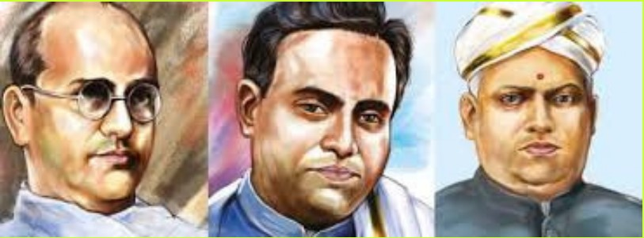
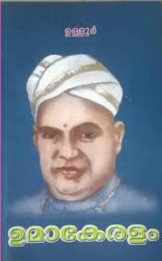
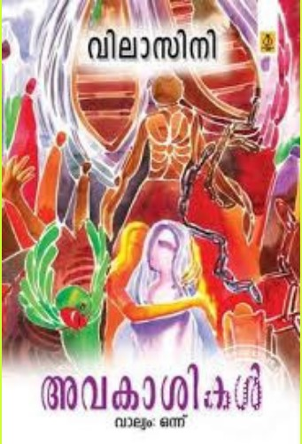
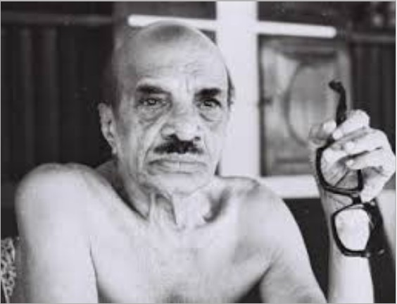
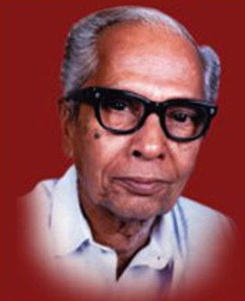
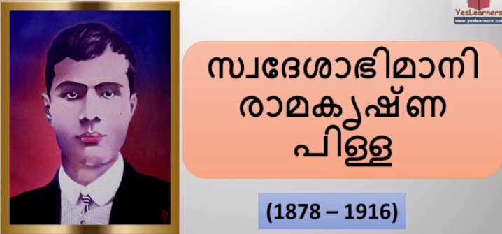
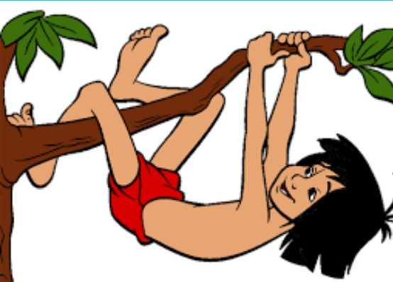

വായനദിനം
1996 മുതൽ കേരള സർക്കാർ ജൂൺ 19 വായന ദിനമായി ആചരിക്കുന്നു. ജൂൺ 19 മുതൽ 25 വരെയുള്ള ഒരാഴ്ച വായനാവാരമായും കേരളാ വിദ്യാഭ്യാസ വകുപ്പ് ആചരിക്കുന്നു. കേരള ഗ്രന്ഥശാലാ സംഘത്തിന്റെ ഉപജ്ഞാതാവും പ്രചാരകനുമായിരുന്ന പുതുവായിൽ നാരായണ പണിക്കർ എന്ന പി.എൻ. പണിക്കരുടെ ചരമദിനമാണ് ജൂൺ 19. കേരള സർക്കാർ 1996മുതൽ അദ്ദേഹത്തിന്റെ ചരമദിനം വായനദിനമായി ആചരിക്കുന്നു. സ്കൂളുകളിൽ ഇ-റീഡിങ് പ്രചരിപ്പിയ്ക്കുവാനായി റീഡിങ് ക്ലബ്ബുകളും ഐ.ടി. ക്ലബ്ബുകളും ഇലക്ട്രോണിക് ക്ലബ്ബുകളും ആരംഭിയ്ക്കാൻ ഈ സമയം വിനിയോഗിയ്ക്കുന്നു.
- 'വായിച്ചു വളരുക, ചിന്തിച്ചു വിവേകം നേടുക' എന്നു പറഞ്ഞതാര് ?
- പി.എൻ പണിക്കരുടെ മുഴുവൻ പേര് ?
Ans: പുതുവയിൽ നാരായണ പണിക്കർ.
- വായനദിനമായി ആചരിക്കുന്നതെന്ന് ?
- ആരുടെ ഓർമ്മയ്ക്കായാണ് വായനദിനം ആചരിക്കുന്നത്.?
- കേരളത്തിൽ ഗ്രന്ഥശാലാ പ്രസ്ഥാനത്തിന് തുടക്കമിട്ട മഹാൻ ആര് ?
- പി.എൻ പണിക്കർ ജനിച്ചതെവിടെയാണ് ?
Ans: ആലപ്പുഴ ജില്ലയിൽ നീലംപേരൂരിൽ.
- പി.എൻ പണിക്കരുടെ ജന്മദിനമാണ് വായനദിനമായി ആചരിക്കുന്നത്. ഈ പ്രസ്താവന ശരിയോ തെറ്റോ ?
- വായിച്ചാലും വളരും
വായിച്ചില്ലേലും വളരും
വായിച്ചു വളർന്നാൽ വിളയും
വായിക്കാതെ വളർന്നാൽ വളയും......
ഇതാരുടെ വരികളാണ് ?
- മലയാള ഭാഷയുടെ പിതാവായി അറിയപ്പെടുന്ന മഹാകവി ആര് ?
- കേരള സർക്കാർ നൽകുന്ന ഏറ്റവും വലിയ സാഹിത്യ പുരസ്കാരം ഏത് ?
Ans: എഴുത്തച്ഛൻ പുരസ്കാരം.
- കാക്കേ കാക്കേ കൂടെവിടെ
കൂട്ടിനകത്തൊരു കുഞ്ഞുണ്ടോ ?
കുഞ്ഞിനു തീറ്റ കൊടുക്കാഞ്ഞാൽ
കുഞ്ഞു വിശന്നു കരയില്ലേ ?
പ്രശസ്തമായ ഈ കവിത എഴുതിയത് ആരാണ് ?
Ans: ഉള്ളൂർ എസ്. പരമേശ്വരയ്യർ.
- ബേപ്പൂർ സുൽത്താൻ എന്ന് നാം വിളിക്കുന്നത് ഏത് സാഹിത്യകാരനെയാണ് ?
Ans: വൈക്കം മുഹമ്മദ് ബഷീർ.
- 'ആടുജീവിതം' എന്ന നോവൽ എഴുതിയത് ആരാണ് ?
- ഉറൂബ് എന്ന തൂലികനാമത്തിൽ അറിയപ്പെടുന്നതാര് ?
- മഹാകവി വള്ളത്തോളിന്റെ ജന്മദിനമായ ഒക്ടോബർ 16 ഏത് ദിനമായാണ് ആചരിക്കുന്നത് ?
- കേരള സാഹിത്യ അക്കാദമിയുടെ ആസ്ഥാനം ഏത് ?
- ആദ്യത്തെ ജ്ഞാനപീഠപുരസ്കാരം നേടിയത് ഒരു മലയാളിയാണ്. അദ്ദേഹത്തിന്റെ പേരെന്ത് ?
Ans: ജി. ശങ്കരക്കുറുപ്പ്.
- ' ഐതിഹ്യമാല ' എന്ന ഗ്രന്ഥത്തിന്റെ കർത്താവ് ആര് ?
Ans: കൊട്ടാരത്തിൽ ശങ്കുണ്ണി.
- ഡിജിറ്റൽ സാങ്കേതിക വിദ്യ ഉപയോഗിച്ച് പുസ്തകം വായിക്കുന്ന രീതി ?
- ഒരു ദേശത്തിൻ്റെ കഥ എന്ന കൃതി ആരുടേതാണ് ?
Ans: എസ്. കെ പൊറ്റക്കാട്.
- മലയാള സർവ്വകലാശാലയുടെ ആസ്ഥാനം ?
- രാമചന്ദ്രവിലാസത്തിന്റെ കർത്താവ് ?
Ans: അഴകത്ത് പത്മനാഭ കുറുപ്പ്
- മലയാളത്തിന് ശ്രേഷ്ഠ ഭാഷാ പദവി ലഭിച്ച വർഷം ?
- മലയാളത്തിലെ ആദ്യ വർത്തമാനപത്രം ?
- "നിശ്യൂന്യത നടമാടും പാതിരൻ മച്ചുകളിൽ നിരനിരയായ് കത്തിക്കും മായാ ദീപം" ഏത് കവിതയിലെ വരികളാണിത് ?
- പി. ഭാസ്കരൻ സംവിധാനം ചെയ്ത ബഷീറിന്റെ നോവൽ ഏതാണ് ?
- വെളിച്ചം ദു:ഖമാണു ണ്ണീ.. തമസ്സല്ലോ സുഖപ്രദം " - ആരുടെ വരികൾ.?
Ans: അക്കിത്തം അച്ചുതൻ നമ്പൂതിരി
- അപ്പുക്കിളി ' എന്ന കഥാപാത്രം ഏതു കൃതിയിലെയാണ്.?
- കേരള ഗ്രന്ഥശാലാ പ്രസ്ഥാനത്തിന്റെ പിതാവ് ആരാണ് ?
- ആധുനിക കവിത്രയം എന്നറിയപ്പെടുന്നത്
വള്ളത്തോൾ നാരായണമേനോൻ, കുമാരനാശാൻ, ഉള്ളൂർ

- ഉള്ളൂരിന്റെ മഹാകാവ്യം

- മലയാളത്തിലെ ഏറ്റവും വലിയ നോവൽ
Ans: അവകാശികൾ - വിലാസിനി(pen name) - എംകെ മേനോൻ

- ഖുർ ആൻ എന്ന വാക്കിന്റെ അർഥം
Ans: വായന - മുസ്ലിം മത ഗ്രന്ഥം
- മഹാഭാരതം രചിച്ചത് ആര്
Ans: വേദവ്യാസൻ - ഭീഷ്മ പിതാ മഹാന്റെ step brother
- ഭൂമിയുടെ അവകാശികൾ എന്ന പ്രസിദ്ധ പുസ്തകം എഴുതിയത്?
Ans: വൈക്കം മുഹമ്മദ് ബഷീർ - ബേപ്പൂർ സുൽത്താൻ - പ്രേമലേഖനം, ബാല്യകാല സഖി, ന്റുപ്പുപ്പാക്കൊരാനേണ്ടാർന്ന്, ആനവാരിയും പൊൻകുരിശും, പാത്തുമ്മയുടെ ആട്, മതിലുകൾ, ഭൂമിയുടെ അവകാശികൾ

- വെളിച്ചം ദുഖമാണുണ്ണീ താമസ്സല്ലോ സുഖപ്രദം - ആരുടെ വരികൾ ?
Ans: അക്കിത്തം അച്യുതൻ നമ്പൂതിരി - 2019 ഞാനപീഠ അവാർഡ്
- മലയാള മനോരമ ആരംഭിച്ചത് ആരുടെ പത്രാധിപത്യത്തിൽ ?
Ans: കണ്ടതിൽ വര്ഗീസ് മാപ്പിള
- കേരളം ഗ്രന്ഥ ശാല സംഘത്തിന്റെ മുഖപത്രം ?
Ans: ഗ്രന്ഥാലോകം - പി എൻ പണിക്കർ നേതൃത്വം കൊടുത്ത പ്രസ്ഥാനം

- എന്റെ നാടുകടത്തൽ ആരുടെ ആത്മകഥയാണ്
Ans: സ്വദേശാഭിമാനി രാമകൃഷ്ണപിള്ള

- ഇന്ന് നിലവിലുള്ളതിൽ വച്ചേറ്റവും പഴക്കം ചെന്ന പത്രം ?
- ആദ്യ മലയാളം നിഘണ്ടു രചിച്ചതാര്?
- പ്രശസ്ത കൃതി യുദ്ധവും സമാധാനവും ആരുടേത് ?
- മൗഗ്ലി കേന്ദ്ര കഥാപാത്രമായ പ്രശസ്ത കൃതി ?

- മാവേലി നാട് വാണീടും കാലം... ആരുടെ രചന ?
Ans: വൈലോപ്പിള്ളി ശ്രീധര മേനോൻ
- വെള്ളപ്പൊക്കത്തിൽ എന്ന പ്രശസ്ത കഥ ആരുടെ കൃതി ?
Ans: തകഴി ശിവശങ്കരപ്പിള്ള
- ആനവാരി രാമൻ നായർ ആരുടെ കഥാപാത്രം?
Ans: വൈക്കം മുഹമ്മദ് ബഷീർ
- ഖസാക്കിന്റെ ഇതിഹാസം രചിച്ചതാര് ?
- മലയാളത്തിലെ ആദ്യത്തെ നോവൽ കുന്ദലത യുടെ കർത്താവ് ?
- സംസ്ഥന ബാൽ സാഹിത്യ ഇൻസ്റ്റിറ്റ്യൂട്ട് പ്രസിദ്ധീകരിക്കുന്ന മാസിക?
- കേരളപാണിനി എന്നറിയപ്പെടുന്നത് ?
Home